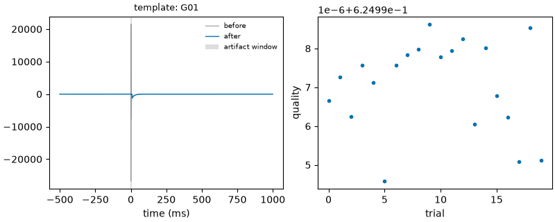

Note
Go to the end to download the full example code.
14: Finding pulses and removing the artifact¶
Find the stimulation pulses in the raw signal, then clean the artifact and score each trial.
Introduction¶
Electrical stimulation leaves a huge, sharp artifact right at the pulse: often thousands of microvolts, far larger than the brain response, sometimes saturating the amplifier. Before fitting anything you must do two things:
find the pulses in the raw continuous signal, so you know where each trial starts (
evoparam.events);remove the artifact from each trial, leaving the brain response, and say how well it worked (
evoparam.artifact).
evoparam has eleven artifact methods. No single method is best everywhere, so evoparam gives every cleaned trial a quality score and can compare methods on the same data.
# Import what we need
import warnings
import numpy as np
from evoparam import plots
from evoparam.artifact import METHODS, artifact_quality, compare_methods, remove_artifact
from evoparam.events import detect_pulses
from evoparam.sim import simulate_ccep
print("artifact methods:", METHODS)
artifact methods: ('interpolate', 'template', 'tail', 'period_template', 'lowrank', 'subspace', 'polynomial', 'matching_pursuit', 'paradigm', 'learned', 'none')
1. Finding the pulses in the raw signal¶
A continuous recording is one long signal, not yet cut into trials. detect_pulses
finds the stimulation pulses from the artifact itself: a sudden jump much larger than
the background. Here we build 30 s of noise with five pulses 5 s apart, on two channels.
sfreq = 2048.0
n_samples = int(30 * sfreq)
rng = np.random.default_rng(0)
raw = rng.normal(0.0, 15.0, size=(2, n_samples)) # 2 channels, 30 s of noise (uV)
pulse_samples = [int(t * sfreq) for t in (2.0, 7.0, 12.0, 17.0, 22.0)]
for sample in pulse_samples:
raw[:, sample : sample + 4] += 4000.0 # a sharp 4 mV artifact at each pulse
events = detect_pulses(raw, sfreq, ch_names=["A1", "A2"])
print(events[["onset_time", "peak_abs", "detector", "threshold"]].to_string(index=False))
onset_time peak_abs detector threshold
2.0 4032.411300 threshold 20.0
7.0 4034.017203 threshold 20.0
12.0 4015.593873 threshold 20.0
17.0 4032.257038 threshold 20.0
22.0 4062.814031 threshold 20.0
The five onsets come back at 2, 7, 12, 17 and 22 s. The table holds everything needed to
cut trials and to describe the stimulation: the sample and time of each pulse, its peak
amplitude, whether the amplifier saturated, a guess of the stimulated contact pair, and
the train each pulse belongs to. detect_events is the same detector that takes a
file or an MNE object instead of an array; the command line exposes it as
evoparam detect-events and writes a BIDS events.tsv.
2. Removing the artifact¶
Once the data are cut into trials, remove_artifact cleans them. We simulate 20 CCEP
trials with the artifact switched on, and a matching set with it off, so we have the
clean truth to compare against. The template method builds the shape of the artifact
from the trials of the same stimulation and subtracts it, interpolating the few samples
at the pulse that cannot be recovered.
dirty, _ = simulate_ccep(
20, n_channels=4, p_response=0.6, artifact=True, layout="grid", sfreq=sfreq, seed=1,
) # fmt: skip
clean_truth, _ = simulate_ccep(
20, n_channels=4, p_response=0.6, artifact=False, layout="grid", sfreq=sfreq, seed=1,
) # fmt: skip
with warnings.catch_warnings():
warnings.simplefilter("ignore")
result = remove_artifact(dirty, method="template", window=(-0.002, 0.009))
print(result.methods_text())
# The cleaned trials of channel 0, over the raw trials
fig = plots.plot_artifact(result, raw=dirty, channel=0)

Evoked responses were analysed with evoparam (version 0.1.0.dev0). The stimulation artifact was removed by template subtraction (evoparam.artifact.remove_artifact, method 'template') in the window -2 to 9 ms (global template; templates grouped by the metadata columns stim_site, stim_current_mA and stim_polarity (those present); scaled to each trial and channel). A quality score between 0 and 1 was computed for every trial. Random draws used the seed 1; the result can be regenerated from its recorded provenance with evoparam.reproduce. Software: Bellec Y.V. evoparam: parameterizing evoked neural responses (version 0.1.0). https://github.com/yannbellec/evoparam
window is the stretch around the pulse the method works on, in seconds: here from
2 ms before to 9 ms after. Keep it as short as the artifact: everything inside it is
replaced, so a window that is too wide eats into the early N1. result.cleaned is a
TrialSet like any other, ready for the next steps.
3. Which method is best here?¶
compare_methods runs several methods on the same data and scores each one. With the
clean truth it can measure the real error, not only internal quality. The key
columns are sir_improvement_db (how many decibels the artifact is pushed below the
signal, higher is better), rrmse (error against the truth, lower is better) and
runtime_s.
with warnings.catch_warnings():
warnings.simplefilter("ignore")
comparison = compare_methods(
dirty,
[
{"method": "template"},
{"method": "tail", "tail": "subtract"},
{"method": "interpolate"},
{"method": "polynomial"},
],
truth=clean_truth,
)
cols = ["method", "median_quality", "rrmse", "sir_improvement_db", "runtime_s"]
print(comparison[cols].round(3).to_string(index=False))
method median_quality rrmse sir_improvement_db runtime_s
template 0.625 3.265 18.359 0.014
tail 0.539 0.667 21.924 0.023
interpolate 0.539 3.265 16.903 0.011
polynomial 0.625 0.147 0.150 0.026
On this made-up CCEP, polynomial and tail reach the lowest error (rrmse),
template and interpolate are fast but leave more residual here. Which to use
depends on the modality: a short sharp CCEP artifact suits template or
interpolate; a slow decaying TMS artifact suits tail; a periodic stimulation
(ERNA, SCS) suits period_template; artifacts shared across many channels suit
lowrank or subspace. The presets (tutorial on presets) already pick a sensible
method for each modality.
4. Scoring each trial¶
Even with a good method, some trials clean worse than others (movement, a bad contact).
remove_artifact already returns a per-trial quality between 0 and 1, and
quality_components says why. artifact_quality can also score any cleaned trials
on their own. Low-quality trials are flagged so you can drop them before fitting.
quality = artifact_quality(result.cleaned, window=(-0.002, 0.009))
print(quality.round(3).head().to_string(index=False))
print(f"\nmedian quality: {np.median(result.quality):.3f}; "
f"worst trial: {np.min(result.quality):.3f}")
residual_ratio edge_discontinuity saturation_fraction template_fit_r2 quality
35.758 42.339 0.0 NaN 0.625
32.928 44.877 0.0 NaN 0.625
37.706 43.420 0.0 NaN 0.625
31.875 42.345 0.0 NaN 0.625
36.546 43.286 0.0 NaN 0.625
median quality: 0.625; worst trial: 0.625
Conclusion¶
The cleaning stage is two steps: detect_pulses (or detect_events) finds where
the stimulation happened in the raw signal, and remove_artifact takes the artifact
out of each trial. Always read the quality: it tells you how much of the early window
is trustworthy, and compare_methods lets you choose a method on your own data
instead of trusting a default. In practice the preset does both for you, and tutorial 08
showed run_pipeline chaining clean, reference, baseline, fit and test in one call.
Total running time of the script: (0 minutes 0.344 seconds)